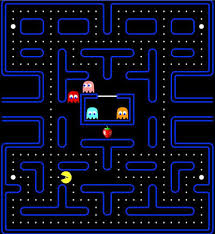
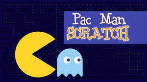

 
Pac-Man (パックマン Pakku Man), también conocido como Comecocos en España, es un videojuego arcade creado por el diseñador de videojuegos Toru Iwatani de la empresa Namco, y distribuido por Midway Games al mercado estadounidense a principios de los años 1980.
Pacman (PC)
$ 200
Desripción
El protagonista del videojuego Pac-Man es un círculo amarillo al que le falta un sector, por lo que parece tener boca. Aparece en laberintos donde debe comer puntos pequeños (llamados «Pac-dots» en inglés), puntos mayores y otros premios con forma de frutas y otros objetos. El objetivo del personaje es comer todos los puntos de la pantalla, momento en el que se pasa al siguiente nivel o pantalla. Sin embargo, cuatro fantasmas o monstruos, Shadow (Blinky), Speedy (Pinky), Bashful (Inky) y Pokey (Clyde), recorren el laberinto para intentar capturar a Pac-Man. Estos fantasmas son, respectivamente, de colores rojo, rosa, cian y naranja. En el juego original (Puck-Man), los fantasmas se llamaban Akabei, Pinky, Aosuke y Guzuta. Los fantasmas no son iguales, así mientras Blinky es muy rápido, y tiene la habilidad de encontrar a Pac-Man en el escenario, Inky es muy lento y muchas veces evitará el encuentro con Pac-Man.